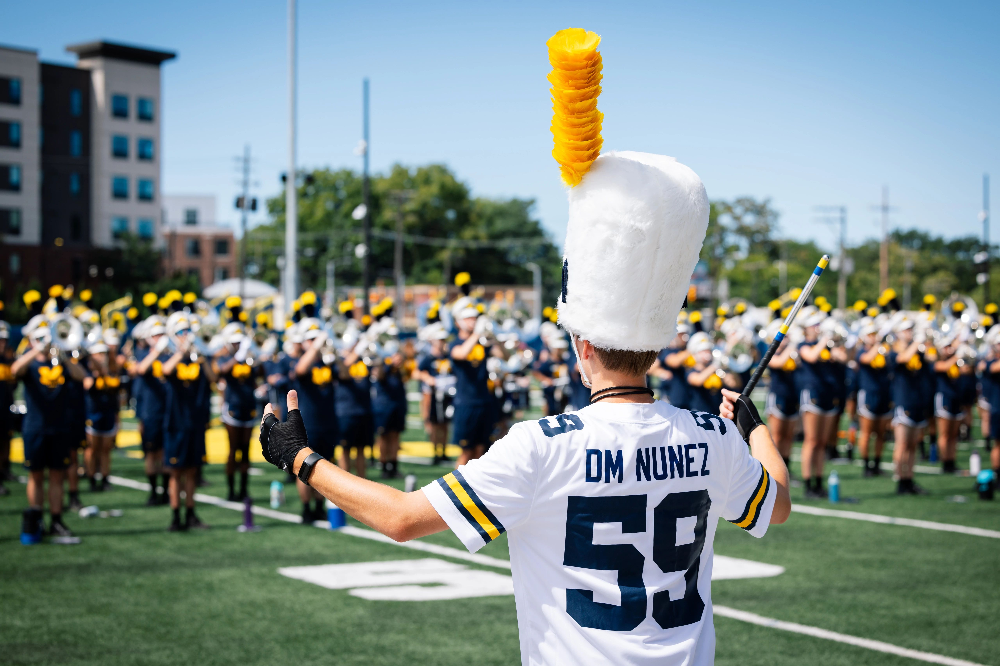

Welcome to Counseling and Psychological Services (CAPS)
We are happy to offer both in-person and virtual services. CAPS is committed to creating an environment based on our values of multicultural, multi-disciplinary and multi-theoretical practices that allow our diverse student body to access care, receive high quality services and take positive pathways to mental health.
Individual Peer Counseling
Individual peer counseling is a service provided by CAPS that allows students to talk to other students who are trained to provide support. This service is free and confidential.
